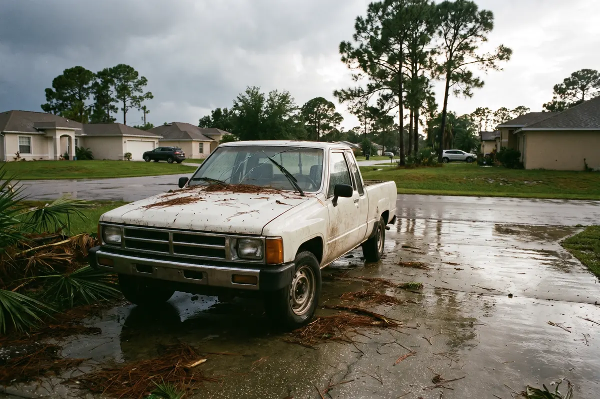

Storm damage auto glass repair in Palm Bay replaces windshields, door windows and back glass broken by falling limbs, flying debris and hail. Palm Bay Auto Glass Repair comes to your home after the weather clears, cleans out the broken glass and seals the car back up so the next afternoon storm does not soak the interior.

Storm damage jobs start with an assessment of every piece of glass on the vehicle, because a limb that breaks the windshield often cracks the back glass or a door window too. We match all the glass first, then replace each piece in one visit when we can. Broken glass is vacuumed from the seats, carpet and door panels, and the technician checks for water inside so you know if anything else needs attention.
Tall slash pines around Palm Bay homes drop heavy limbs in strong wind.
Lawn furniture, roofing and trash cans become missiles in a tropical storm.
Summer thunderstorms can drop hail big enough to chip or crack glass.
Even a small storm crack spreads quickly in the heat that follows.
Broken or loose glass lets rain soak seats, carpet and electronics.
Storm damage often hits more than one piece of glass.
Palm Bay sits close to the Atlantic coast and gets frequent summer thunderstorms plus the occasional tropical storm or hurricane. Many neighborhoods are shaded by tall slash pines and oaks that shed limbs in high wind, and cars parked in driveways and on streets take the hit. Wind-blown debris adds to it, and a cracked windshield left in the sun after a storm tends to spread fast.
Storm damage glass cost depends on how many pieces broke, which ones they are and what features the glass has. A windshield alone is often covered with no deductible under Florida Statute 627.7288 if you have comprehensive coverage. Door glass and back glass broken in the same storm usually fall under your regular comprehensive deductible. Call with your vehicle and a description of what broke for a free estimate.
| Replace now | Wait it out | |
|---|---|---|
| Interior | Stays dry and clean | Rain soaks seats, carpet and electronics |
| Cracks | New glass, no spreading | Storm cracks grow in the heat |
| Security | Car locks up again | Open to theft |
| Insurance | Claim filed while details are fresh | Harder to document later |
Most vehicles with a new windshield also need ADAS camera calibration before the safety systems can be trusted again. We also handle windshield replacement and rock chip repair, or you can see all auto glass services in Palm Bay.
Comprehensive coverage usually pays for glass broken by falling limbs, debris and hail. A windshield often has no deductible under Florida law, while side and back glass usually fall under your regular deductible. We can help you start the claim.
We schedule visits as soon as roads are safe and the weather has cleared. After a major storm, calls stack up quickly, so reach out early and cover the opening with plastic in the meantime.
Only if the driver can see clearly and the glass is not caved in. A windshield that is pushed in or badly cracked across the driver’s view is not safe to drive, so let us come to the car instead.
Usually, yes. Once we know which glass is broken, we order every piece and replace them in the same visit when possible, so the car is not left half-fixed between appointments.
Call for a free estimate. We confirm the right glass and the right fix before anyone heads your way.
Call (321) 294-0790 Now